For a dash board of the geographical distribution of the two mental health outcomes, click {here}(). Note that the data set has no data from Florida.
First, we look at the top 10 states with the highest/lowest estimated % women/men self-reported past depression. We look at women first. Below is a bar plot to visualize the 10 states with the highest estimated % of self-reported depression among women.
depr_prev_bystate_gender = brfss_design %>%
group_by(state_code, sex, depression) %>%
summarize(depression_prev = 100*survey_mean(na.rm = T, vartype = c("ci"))) %>%
ungroup()
sorted_depr_prev = depr_prev_bystate_gender %>%
filter(depression == "yes", sex == "female") %>%
arrange(desc(depression_prev))
sorted_depr_prev %>%
select(state_code, depression_prev:depression_prev_upp) %>%
slice(1:10) %>%
ggplot(aes(x = fct_inorder(state_code), y = depression_prev)) +
geom_bar(position="dodge", stat="identity", fill = "#FF6666") +
geom_errorbar(aes(ymin=depression_prev_low, ymax=depression_prev_upp),
width=.2, position=position_dodge(.9)) +
labs(x = "state",
y = "prevalence of self-reported past depression (%)",
title = "Top 10 states with the highest estimated % of women self-reported past depression") +
geom_text(aes(label = sprintf("%.2f", depression_prev), y = depression_prev), vjust = 5) 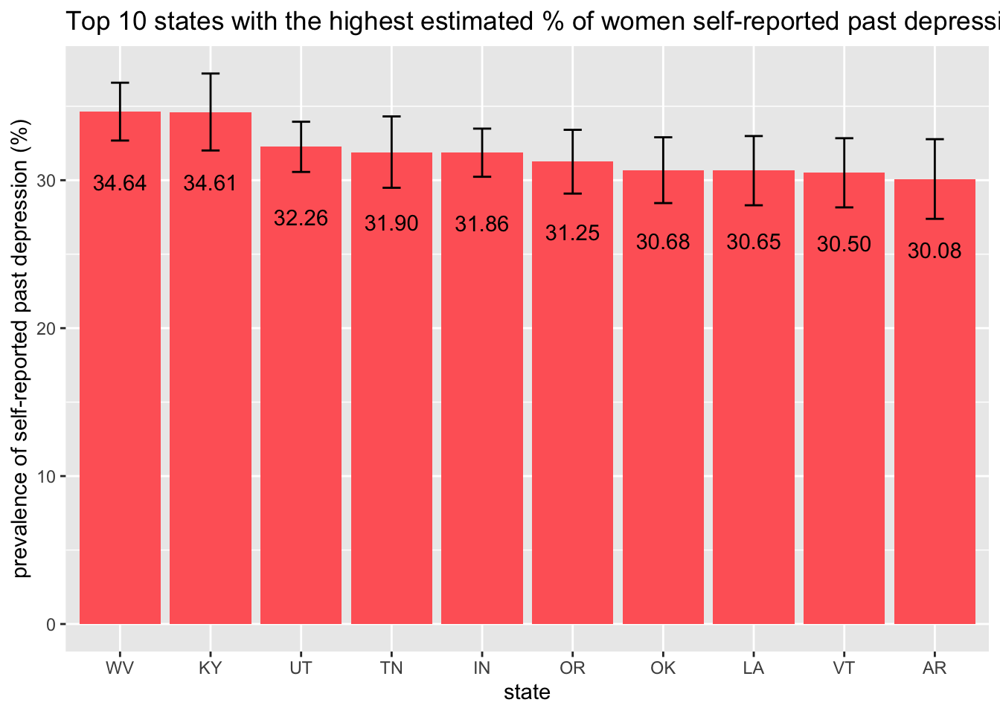
We can see that the top 10 states with the highest estimated % of women self-reported past depression are in order, West Virginia, Kentucky, Utah, Tennessee, Indiana, Oregon, Oklahoma, Louisiana, Vermont, and Arkensas. According to the graph, the estimated %s of self-reported depression among women are around 30% in all these states, with very small differences in magnitude.
Below is a bar plot to visualize the 10 states with the lowest estimated % of self-reported depression among women.
depr_prev_bystate_gender %>%
filter(depression == "yes", sex == "female") %>%
select(state_code, depression_prev:depression_prev_upp) %>%
slice_min(depression_prev, n = 10) %>%
ggplot(aes(x = fct_inorder(state_code), y = depression_prev)) +
geom_bar(position="dodge", stat="identity", fill = "#69b3a2") +
geom_errorbar(aes(ymin=depression_prev_low, ymax=depression_prev_upp),
width=.2, position=position_dodge(.9)) +
labs(x = "state",
y = "prevalence of self-reported past depression (%)",
title = "Top 10 states with the lowest estimated % of women self-reported past depression") +
geom_text(aes(label = sprintf("%.2f", depression_prev), y = depression_prev), vjust = 5) 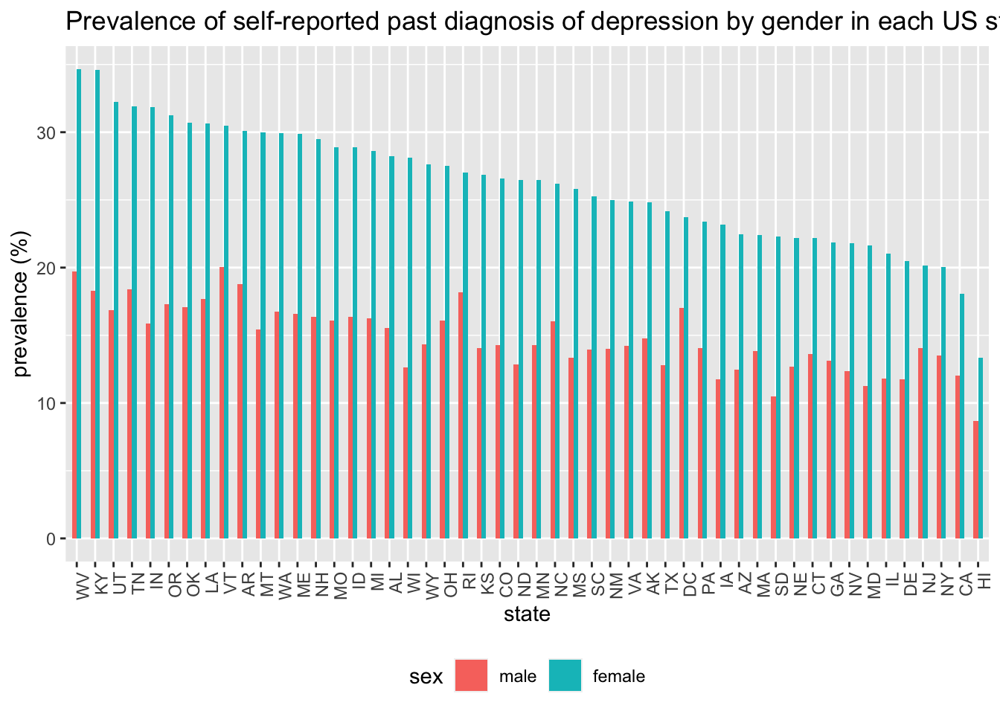
We can see that the top 10 states with the lowest estimated % of women self-reported past depression are in order, Hawaii, California, New York, New Jersey, Delaware, Illinois, Maryland, Nevada, Georgia, and Connecticut. Among these states, it seems like the prevalence of self-reported depression among women in Hawaii is much lower than the other 9 states.
Next, we look at the rankings for men. Below is a bar plot to visualize the 10 states with the highest estimated % of self-reported depression among men.
depr_prev_bystate_gender %>%
filter(depression == "yes", sex == "male") %>%
select(state_code, depression_prev:depression_prev_upp) %>%
slice_max(depression_prev, n = 10) %>%
ggplot(aes(x = fct_inorder(state_code), y = depression_prev)) +
geom_bar(position="dodge", stat="identity", fill = "#FF6666") +
geom_errorbar(aes(ymin=depression_prev_low, ymax=depression_prev_upp),
width=.2, position=position_dodge(.9)) +
labs(x = "state",
y = "prevalence of self-reported past depression (%)",
title = "Top 10 states with the lowest estimated % of men self-reported past depression") +
geom_text(aes(label = sprintf("%.2f", depression_prev), y = depression_prev), vjust = 5) 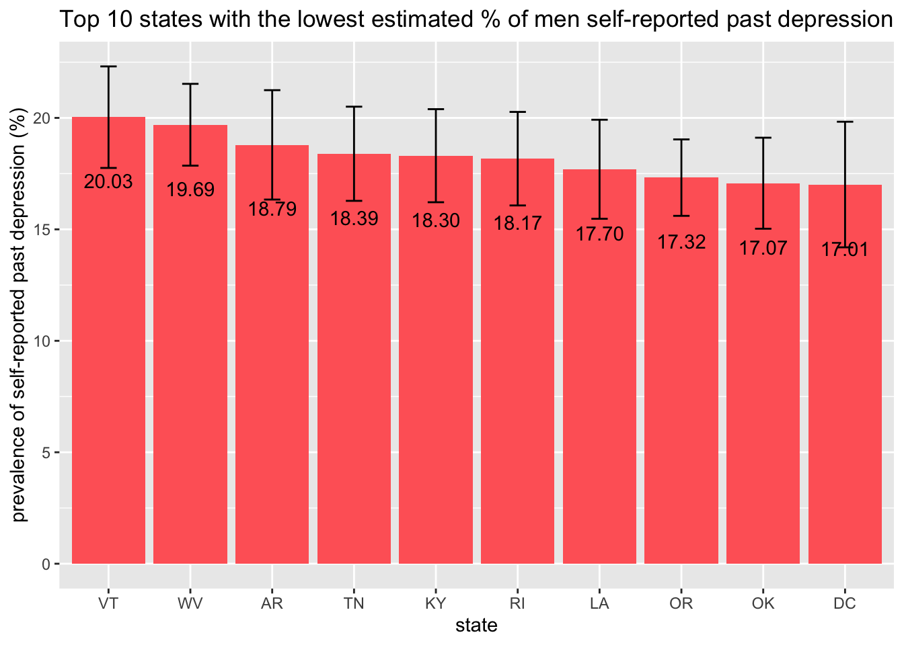
We can see that the top 10 states with the highest estimated % of men who self-reported past depression are in order, Vermont, West Virginia, Arkansas, Tennessee, Kentucky, Rhode Island, Louisiana, Oregon, Oklahoma, and Washinton DC. According to the graph, the estimated %s of self-reported depression among men are around 20% in all these states, with very small differences in magnitude. All these states also have the highest estimated % of self-reported depression among women, except for Rhodes Island and Washinton DC. This might indicate high disparity in mental health outcomes in the remaining 8 states.
Below is a bar plot to visualize the 10 states with the lowest estimated % of self-reported depression among men.
depr_prev_bystate_gender %>%
filter(depression == "yes", sex == "male") %>%
select(state_code, depression_prev:depression_prev_upp) %>%
slice_min(depression_prev, n = 10) %>%
ggplot(aes(x = fct_inorder(state_code), y = depression_prev)) +
geom_bar(position="dodge", stat="identity", fill = "#69b3a2") +
geom_errorbar(aes(ymin=depression_prev_low, ymax=depression_prev_upp),
width=.2, position=position_dodge(.9)) +
labs(x = "state",
y = "prevalence of self-reported past depression (%)",
title = "Top 10 states with the lowest estimated % of men self-reported past depression") +
geom_text(aes(label = sprintf("%.2f", depression_prev), y = depression_prev), vjust = 5) 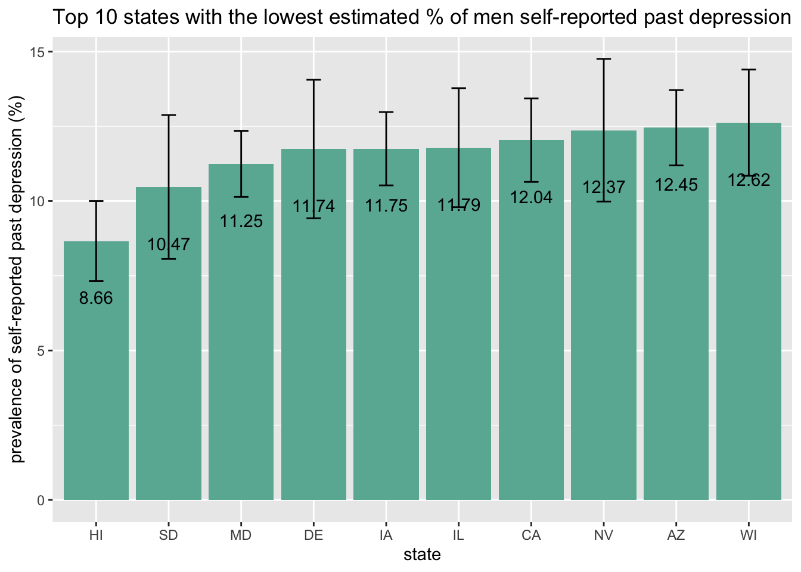 We can see that the top 10 states with the lowest estimated % of men who self-reported past depression are, in order, Hawaii, South Dakota, Maryland, Delaware, Iowa, Illinois, California, Nevada, Arizona, and Wisconsin. Again, the difference in magnitude is small. Among these states, South Dakota, Iowa, Nevada, Arizona, and Wisconson were not among the top 10 states that have the lowest estimated % of self-reported past depression among women. This observation reiterate the possibility of larger gender gap in this mental health outcome in certain states.
To present a summary for all states surveyed in the data set, we produced a grouped barplot of the prevalence of self-reported past diagnosis of depression by gender in each US state, arranged in descending order by the value of this estimate among women.
depr_prev_bystate_gender %>%
filter(depression == "yes") %>%
mutate(state_code = factor(state_code, levels = sorted_depr_prev$state_code, ordered = TRUE)) %>%
ggplot(aes(x = state_code, y = depression_prev, fill = sex), group = state_code) +
geom_bar(stat="identity", width=.5, position = "dodge") +
theme(axis.text.x = element_text(angle = 90, hjust = 1),
legend.position = "bottom") +
labs(x = "state", y = "prevalence (%)",
title = "Prevalence of self-reported past depression by gender in each US state")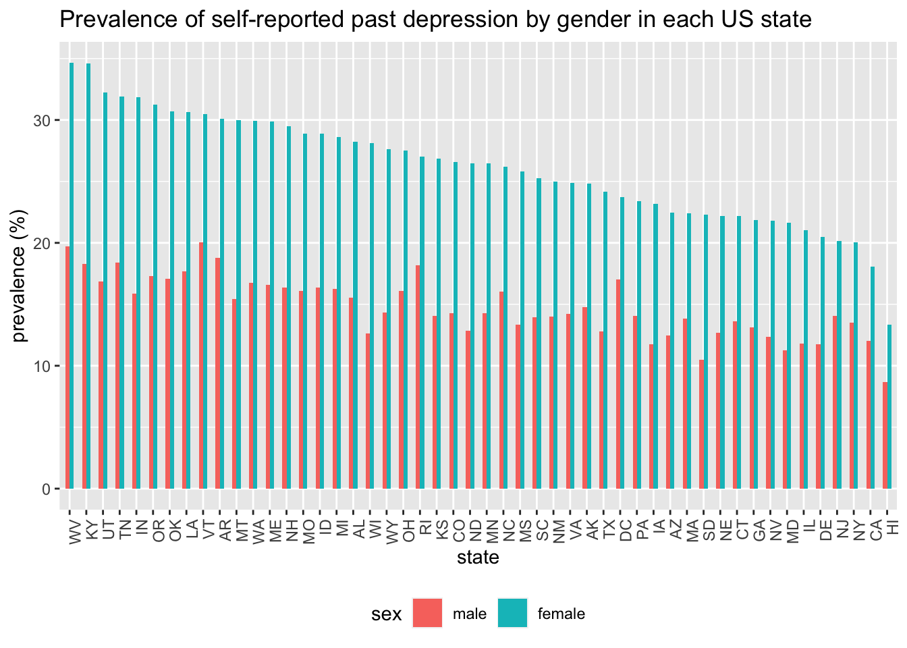
We can see that this prevalence among women is the highest in West Virginia and lowest in Hawaii. Interestingly, this prevalence among men did not show a decrease as obvious as that among women. This indicates that the gender difference in this outcome is larger in some states than the other. To think about this observation further, we produced below another grouped barplot of the prevalence of self-reported past diagnosis of depression by gender in each US state, but thus time arranged in descending order by the difference of the value of this estimate between men and women.
diff_vec = depr_prev_bystate_gender %>%
ungroup() %>%
filter(depression == "yes") %>%
select(state_code, sex, depression_prev) %>%
pivot_wider(names_from = sex, names_prefix = "prev_", values_from = depression_prev) %>%
mutate(prev_diff = prev_female - prev_male) %>%
select(prev_diff)
# Extract the difference in prevalence variable
diff_vec = diff_vec[rep(seq_len(nrow(diff_vec)), each = 2), ]
depr_prev_bystate_gender %>%
filter(depression == "yes") %>%
select(state_code, sex, depression_prev) %>%
bind_cols(., diff_vec) %>%
ggplot(aes(x = fct_reorder(state_code, prev_diff, .desc = T), y = depression_prev, fill = sex), group = state_code) +
geom_bar(stat="identity", width=.5, position = "dodge") +
theme(axis.text.x = element_text(angle = 90, hjust = 1),
legend.position = "bottom") +
labs(x = "state", y = "prevalence (%)",
title = "Prevalence of self-reported past depression by gender, ordered by difference")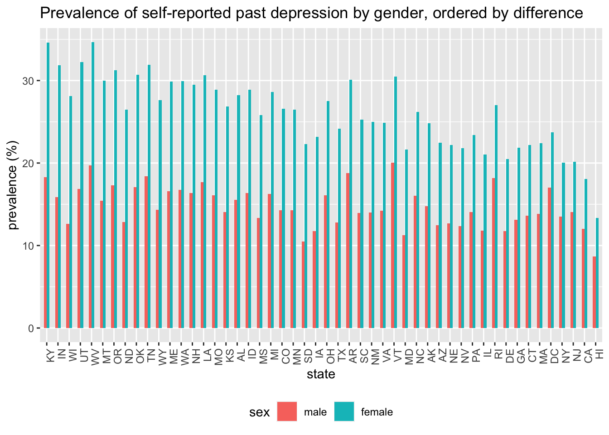
We can see that the 10 states that have the largest difference of the estimated % of self-reported past depression are, in order, Kentucky, Indiana, Wisconsin, Utah, West Virginia, Montana, Oregon, North Dakota, Oklahoma, and Tennessee. Among these 10 states, Kentucky, Indiana, Utah, West Virginia, Oregan, Oklahoma, and Tennessee are also in the top 10 states that have the highest estimated % of self-reported past depression among women, suggesting these states not only have overall high past depression prevalence but also high gender disparity in past depression prevalence.
We repeat the same exploratory analyses as above, but this time for the other mental health outcome, which is the % of respondents who self-reported more than 15 days mental health not good in the past 30 days. We start with the state rankings again.
badmh_prev_bystate_gender = brfss_design %>%
group_by(state_code, sex, mh_bin) %>%
summarize(badmh_prev = 100*survey_mean(na.rm = T, vartype = c("ci"))) %>%
ungroup()
badmh_prev_bystate_gender %>%
filter(mh_bin == ">15 days", sex == "female") %>%
select(state_code, badmh_prev:badmh_prev_upp) %>%
slice_max(badmh_prev, n = 10) %>%
ggplot(aes(x = fct_inorder(state_code), y = badmh_prev)) +
geom_bar(position="dodge", stat="identity", fill = "#FF6666") +
geom_errorbar(aes(ymin=badmh_prev_low, ymax=badmh_prev_upp),
width=.2, position=position_dodge(.9)) +
labs(x = "state",
y = "% >15 day of bad mental health in the past 30 days",
title = "Top 10 states with the highest estimated % \n of women with >15 days of bad mental health in the past 30 days") +
geom_text(aes(label = sprintf("%.2f", badmh_prev), y = badmh_prev), vjust = 5) 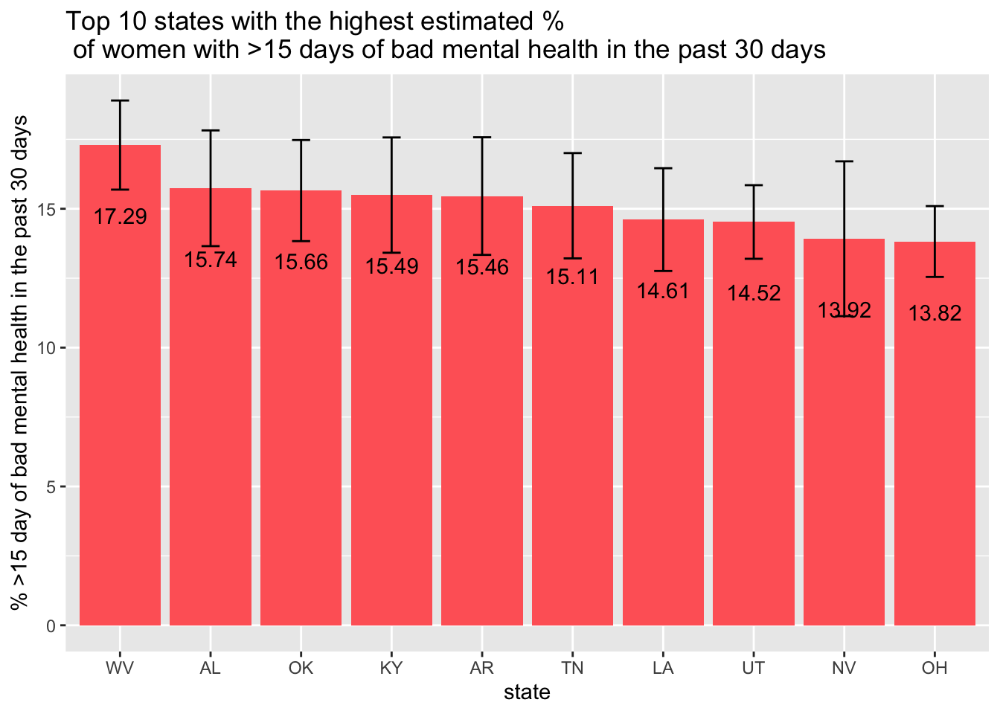
We can see that the top 10 states with the highest estimated % of women self-reported more than 15 days of bad mental health in the past 30 days are in order, West Virginia, Alabama, Oklahoma, Kentucky, Arkansas, Tennessee, Louisiana, Utah, Nevada, and Ohio. According to the graph, the estimated %’s of self-reported >15 days where mental health is not good among women are around 15% in all these states, with small differences in magnitude.
Below is a bar plot to visualize the 10 states with the lowest estimated % of women who self-reported >15 days where mental health is not good in the past 30 days.
badmh_prev_bystate_gender %>%
filter(mh_bin == ">15 days", sex == "female") %>%
select(state_code, badmh_prev:badmh_prev_upp) %>%
slice_min(badmh_prev, n = 10) %>%
ggplot(aes(x = fct_inorder(state_code), y = badmh_prev)) +
geom_bar(position="dodge", stat="identity", fill = "#69b3a2") +
geom_errorbar(aes(ymin=badmh_prev_low, ymax=badmh_prev_upp),
width=.2, position=position_dodge(.9)) +
labs(x = "state",
y = "% self-reported >15 day of bad mental health in the past 30 days",
title = "Top 10 states with the lowest estimated % \n of women with >15 days of bad mental health in the past 30 days") +
geom_text(aes(label = sprintf("%.2f", badmh_prev), y = badmh_prev), vjust = 5) 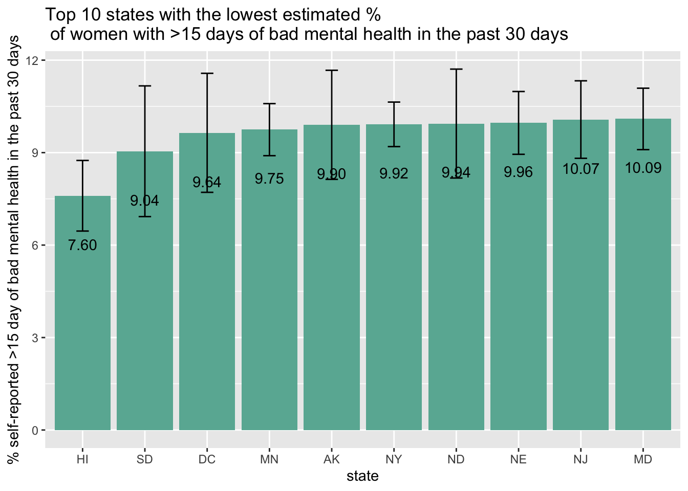
We can see that the top 10 states with the lowest estimated % of women self-reported > 15 days mental health not good in the past 30 days are in order, Hawaii, South Dakota, Washington DC, Minnesota, Alaska, New York, North Dakota, Nebraska, New Jersey, and Maryland. The differences in magnitude of this mental health outcome are small among these states.
Next, we look at the rankings for men. Below is a bar plot to visualize the 10 states with the highest estimated % of self-reported >15 days mental health not good in the past 30 days among men.
badmh_prev_bystate_gender %>%
filter(mh_bin == ">15 days", sex == "male") %>%
select(state_code, badmh_prev:badmh_prev_upp) %>%
slice_max(badmh_prev, n = 10) %>%
ggplot(aes(x = fct_inorder(state_code), y = badmh_prev)) +
geom_bar(position="dodge", stat="identity", fill = "#FF6666") +
geom_errorbar(aes(ymin=badmh_prev_low, ymax=badmh_prev_upp),
width=.2, position=position_dodge(.9)) +
labs(x = "state",
y = "% self-reported >15 day of bad mental health in the past 30 days",
title = "Top 10 states with the highest estimated % \n of men with >15 days of bad mental health in the past 30 days") +
geom_text(aes(label = sprintf("%.2f", badmh_prev), y = badmh_prev), vjust = 5) 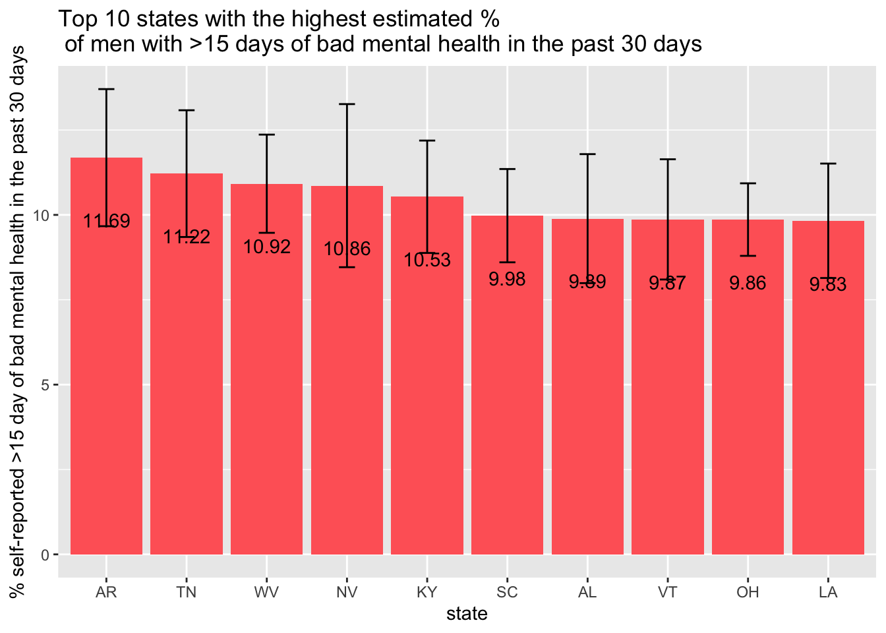
We can see that the top 10 states with the highest estimated % of men who self-reported past depression are in order, Arkansas, Tennessee, West Virginia, Nevaa, Kentucky, South Carolina, Alabama, Vermont, Oklahoma, and Louisianna. According to the graph, the estimated %’s of self-reported >15 days mental health not good in the past 30 days among men are around 10% in all these states, which is closee in value to the 10 lowest %’s of this mental health outcome among women, as we saw above. It is also worth noting that these states overlap with the top 10 states where most %’s of women reporting >15 days mental health not good in the past 30 days, except for Rhodes Island and Washington DC. This indicates that the 8 overlapping states probably have the highest %’s of people reporting more than half of the past 30 days mental health not good.
Below is a bar plot to visualize the 10 states with the lowest estimated % of self-reported >15 days mental health not good among men.
badmh_prev_bystate_gender %>%
filter(mh_bin == ">15 days", sex == "male") %>%
select(state_code, badmh_prev:badmh_prev_upp) %>%
slice_min(badmh_prev, n = 10) %>%
ggplot(aes(x = fct_inorder(state_code), y = badmh_prev)) +
geom_bar(position="dodge", stat="identity", fill = "#69b3a2") +
geom_errorbar(aes(ymin=badmh_prev_low, ymax=badmh_prev_upp),
width=.2, position=position_dodge(.9)) +
labs(x = "state",
y = "% >15 days mental health not good in the past 30 days",
title = "Top 10 states with the lowest estimated % of men \n self-reported >15 days mental health not good in the past 30 days") +
geom_text(aes(label = sprintf("%.2f", badmh_prev), y = badmh_prev), vjust = 5) 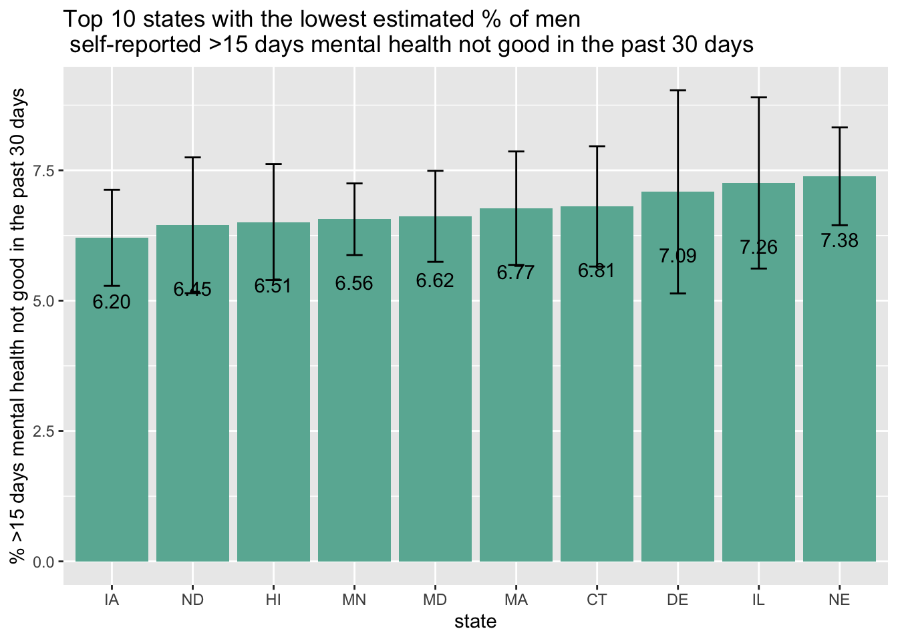
We can see that the differences in the outcome among the 10 states above are not very different.
To present a summary for all states surveyed in the data set, we produced a grouped barplot of the prevalence of self-reported >15 days mental health not good in the past 30 days by gender in each US state, arranged in descending order by the value of this estimate among women.
sorted_badmh_prev = badmh_prev_bystate_gender %>%
filter(mh_bin == ">15 days", sex == "female") %>%
arrange(desc(badmh_prev))
badmh_prev_bystate_gender %>%
filter(mh_bin == ">15 days") %>%
ggplot(aes(x = factor(state_code, levels = sorted_badmh_prev$state_code, ordered = TRUE), y = badmh_prev, fill = sex), group = state_code) +
geom_bar(stat="identity", width=.5, position = "dodge") +
theme(axis.text.x = element_text(angle = 90, hjust = 1),
legend.position = "bottom") +
labs(x = "state", y = "prevalence (%)",
title = "% >15 day of bad mental health in the past 30 days, by gender")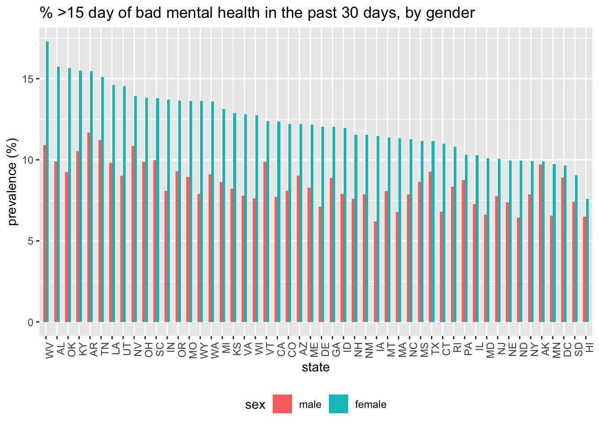
Again, we can see that this % among women is the highest in West Virginia and lowest in Hawaii. Again, this % among men did not show a decrease as obvious as that among women. This shows that in states where women are “happier” (indicated by fewer days mental health is not good in the past month), men are not more likely to be be “happier” as well. This also suggests that the gender difference in this outcome is larger in some states than the other. To think about this observation further, we produced below another grouped barplot of the prevalence of self-reported >15 days mental health not good by gender in each US state, but this time arranged in descending order by the difference in % reporting >15 days mental health not good in the past 30 days between men and women.
diff_vec_badmh = badmh_prev_bystate_gender %>%
filter(mh_bin == ">15 days") %>%
select(state_code, sex, badmh_prev) %>%
pivot_wider(names_from = sex, names_prefix = "prev_", values_from = badmh_prev) %>%
mutate(prev_diff = prev_female - prev_male) %>%
select(prev_diff)
# Extract the difference in prevalence variable
diff_vec_badmh = diff_vec_badmh[rep(seq_len(nrow(diff_vec_badmh)), each = 2), ]
badmh_prev_bystate_gender %>%
filter(mh_bin == ">15 days") %>%
select(state_code, sex, badmh_prev) %>%
bind_cols(., diff_vec_badmh) %>%
ggplot(aes(x = fct_reorder(state_code, prev_diff, .desc = T), y = badmh_prev, fill = sex), group = state_code) +
geom_bar(stat="identity", width=.5, position = "dodge") +
theme(axis.text.x = element_text(angle = 90, hjust = 1),
legend.position = "bottom") +
labs(x = "state", y = "prevalence (%)",
title = "%>15 days of bad mental health in the past 30 days \n ordered by difference between gender")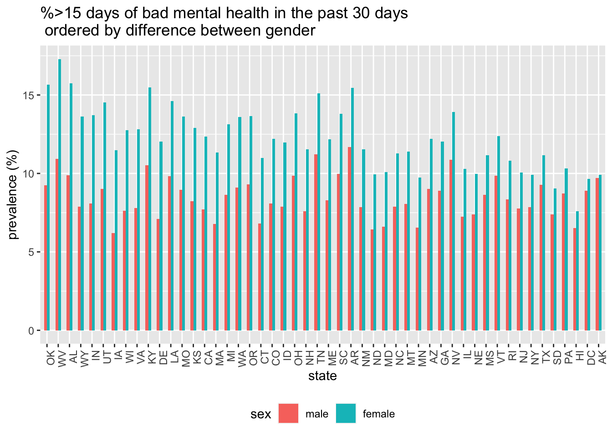
We can see that the 10 states that have the largest difference of the estimated % of self-reported >15 days mental health not good in the past 30 days are, in order, Oklahoma, West Virginia, Alabama, Wyoming, Indiana, Utah, Iowa, Wisconsin, Virginia, and Kentucky. Among these 10 states, West Virginia, Alabama, Kentucky, and Utah are alse among the top 10 states where highest % of women reported >15 days mental health not good in the past 30 days.
Finally, for each comparison, we make a table that shows side by side the top 10 states with the highest prevalence of self-reported past depression among women, self-reported >15 days mental health not good among women, and the largest difference in these two mental health outcomes by gender.
top_10_depr_prev = depr_prev_bystate_gender %>%
ungroup() %>%
filter(depression == "yes", sex == "female") %>%
slice_max(depression_prev, n=10) %>%
select(state_code)
top_10_depr_diff = depr_prev_bystate_gender %>%
ungroup() %>%
filter(depression == "yes") %>%
select(state_code, sex, depression_prev) %>%
bind_cols(., diff_vec) %>%
slice_max(prev_diff, n = 20) %>%
filter(sex == "female") %>%
select(state_code)
top_10_badmh_prev = badmh_prev_bystate_gender %>%
filter(mh_bin == ">15 days", sex == "female") %>%
slice_max(badmh_prev, n=10) %>%
select(state_code)
top_10_badmh_diff = badmh_prev_bystate_gender %>%
filter(mh_bin == ">15 days") %>%
select(state_code, sex, badmh_prev) %>%
bind_cols(., diff_vec_badmh) %>%
slice_max(prev_diff, n = 20) %>%
filter(sex == "female") %>%
select(state_code)
#tibble(`% past depression` = top_10_depr_prev,
# `difference in % past depression` = top_10_depr_diff,
# `% bad mental health` = top_10_badmh_prev,
# `difference in % bad mental health` = top_10_badmh_diff)
ranking_table = cbind(top_10_depr_prev,
top_10_depr_diff,
top_10_badmh_prev,
top_10_badmh_diff)
colnames(ranking_table) = c("% past depression", "difference in % past depression",
"% bad mental health", "difference in % bad mental health ")
ranking_table %>% knitr::kable()| % past depression | difference in % past depression | % bad mental health | difference in % bad mental health |
|---|---|---|---|
| WV | KY | WV | OK |
| KY | IN | AL | WV |
| UT | WI | OK | AL |
| TN | UT | KY | WY |
| IN | WV | AR | IN |
| OR | MT | TN | UT |
| OK | OR | LA | IA |
| LA | ND | UT | WI |
| VT | OK | NV | VA |
| AR | TN | OH | KY |